The first five have an idea in them. The ten below are the conventional shapes — competent, but you could find them anywhere. All of them are real pages using the real screenshots. Click a thumbnail to open it.
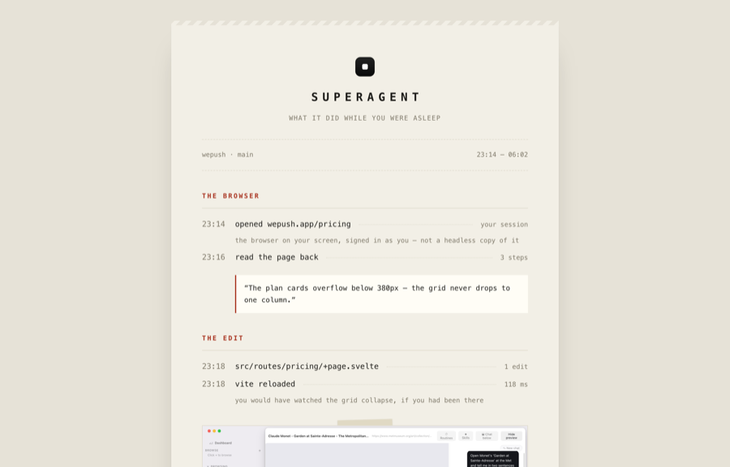
No hero, no feature grid — an itemised receipt of what it did between 23:14 and 06:02, ending on the only number that matters: interruptions, 0.
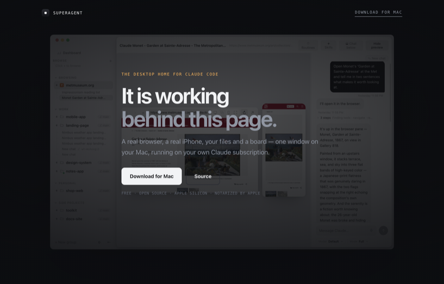
The app sits fixed behind the page, dimmed, the whole way down — then at the last screen you ask it to come forward, and it does. One move, earned.
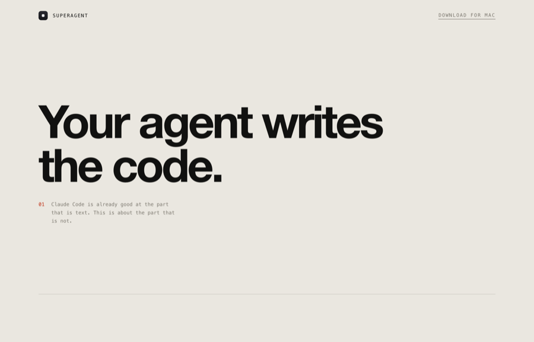
“Your agent writes the code. It has never seen the page. So give it a computer.” Each line carries a small factual footnote so it never becomes empty swagger.
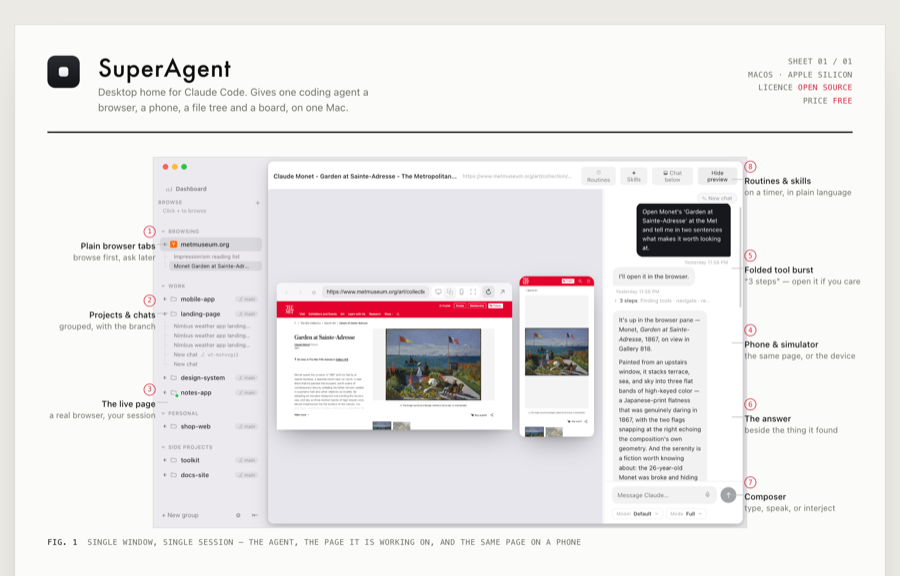
Numbered callouts key out to the margins of the real screenshot; below it, capabilities and a behaviour table. Braun manual energy.
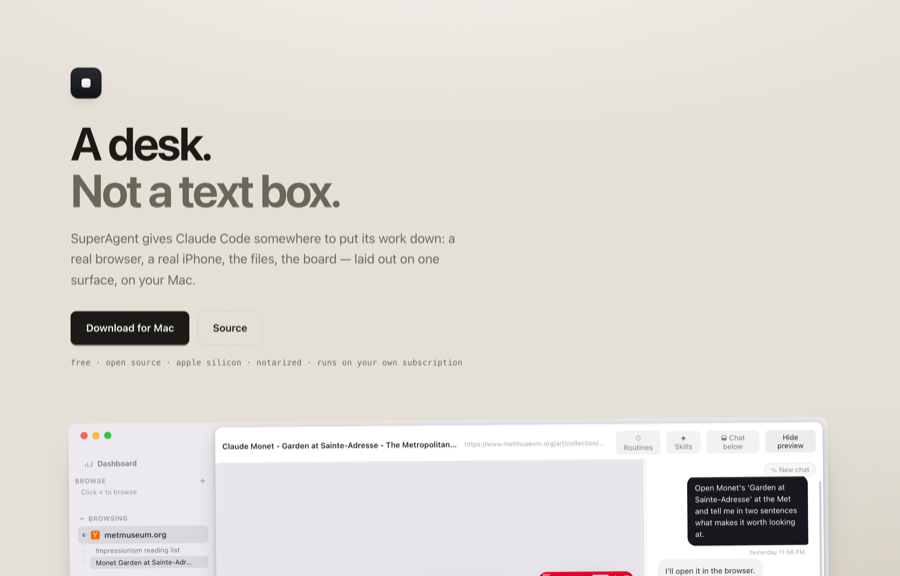
A desk seen from above: the window, a marked-up brief, a sticky note with the one rule, the night's receipt. Nothing animates; the objects just have weight.
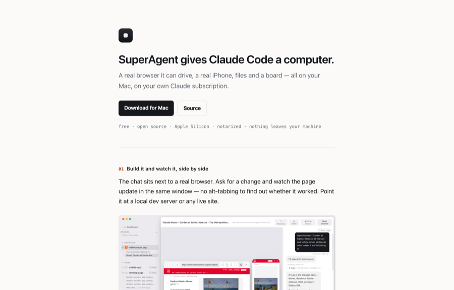
One column, left aligned, no decoration. Bets everything on the copy. Fastest to read, hardest to fake.
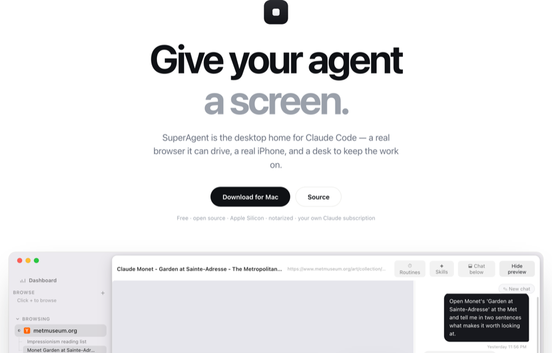
The safe Apple-shaped version: huge headline, one enormous product shot, alternating feature rows.
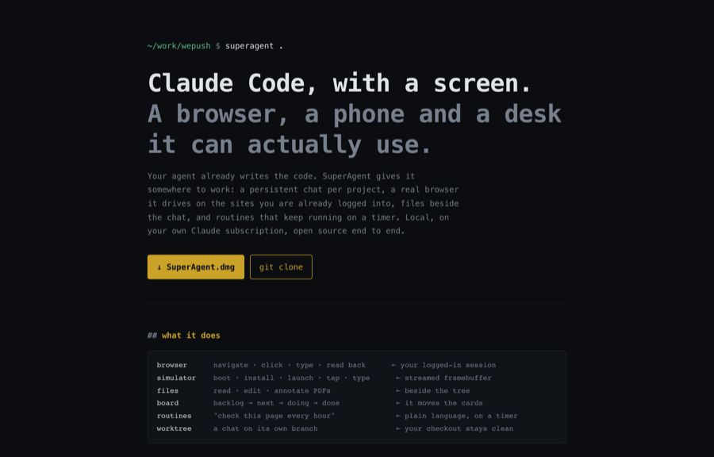
Reads like a man page that became an app. No image above the fold; features as flags you would have wanted.
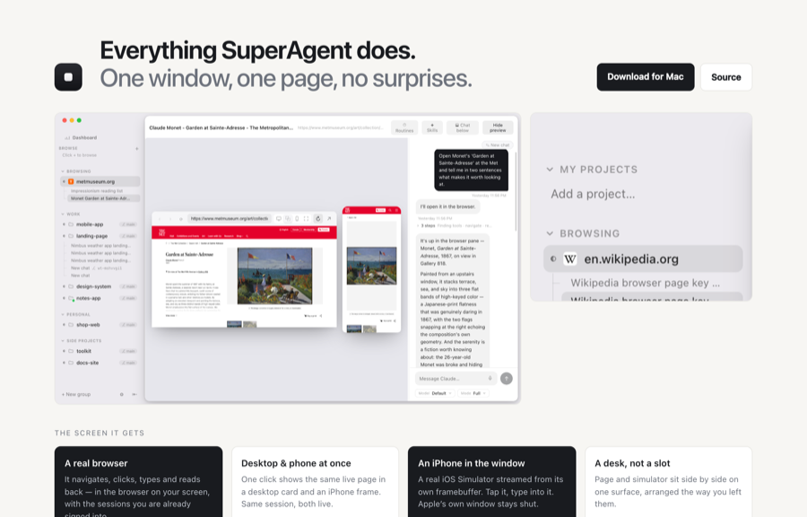
Dense and scannable, for people who want to know exactly what they're getting before they scroll.
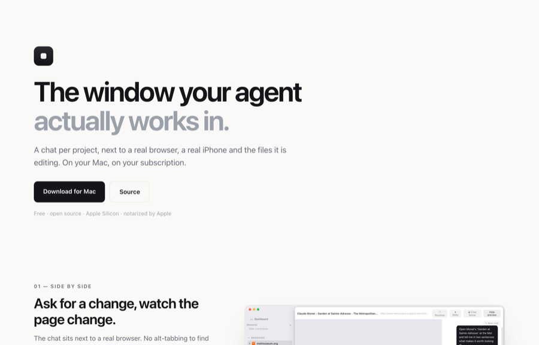
Five sections on the left; one held screenshot on the right that changes as each arrives. Section-based, not scrubbed.
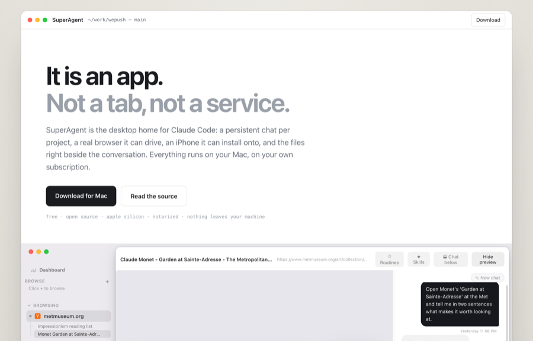
One idea carried the whole way: this is an app, not a tab. Traffic lights pinned to the top as you scroll.
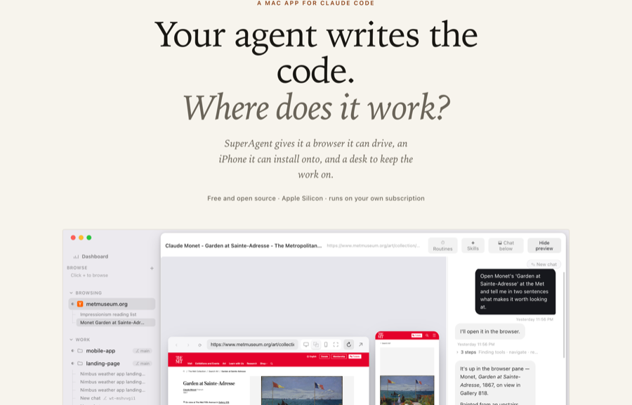
Reads like a considered write-up rather than a pitch. Drop cap, captioned figures, an argument in prose.
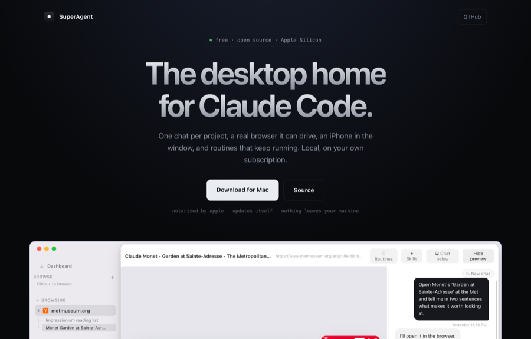
Hairline grid, one cool accent, a glowing product shot. Familiar on purpose — it looks like what it is.
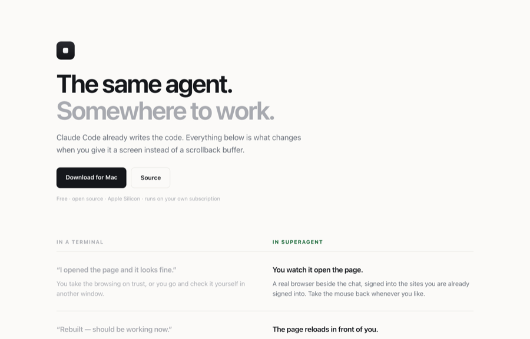
Built as an argument: six rows of the same agent, before and after it gets a screen. No adjectives needed.
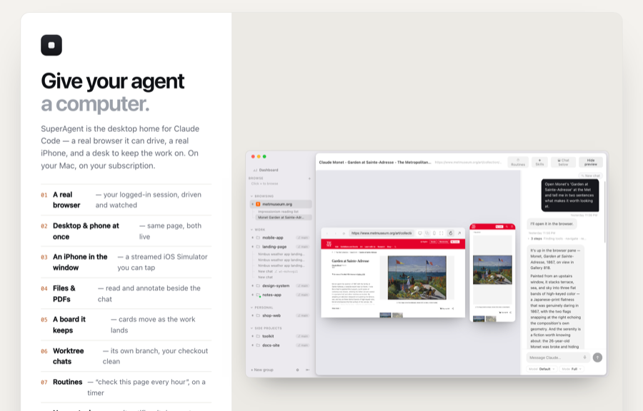
A single sheet: headline, eight numbered lines, the shot, the button. There is no below the fold.